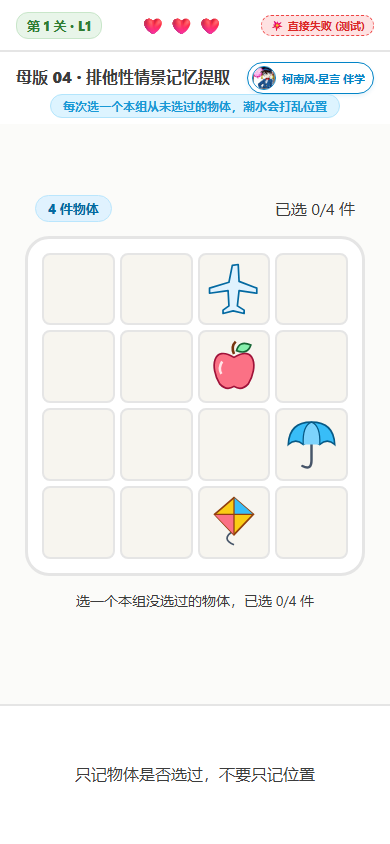
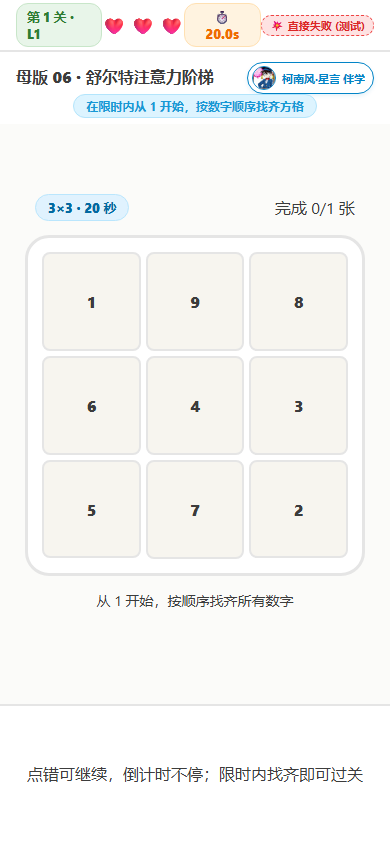
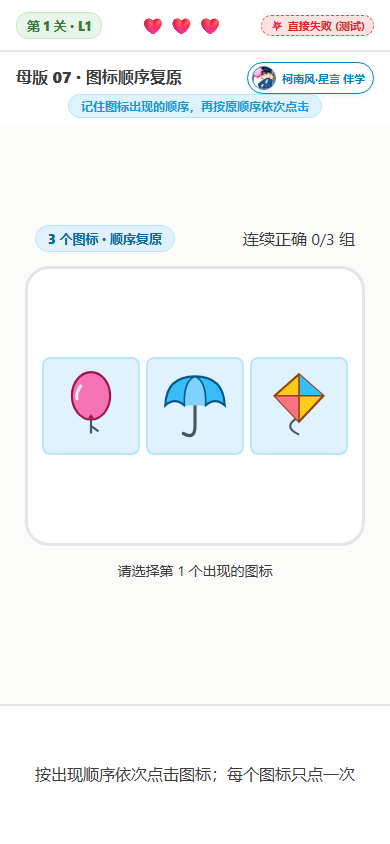
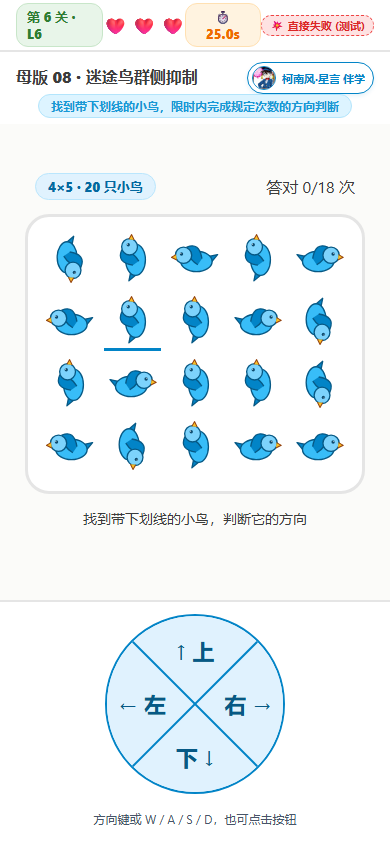
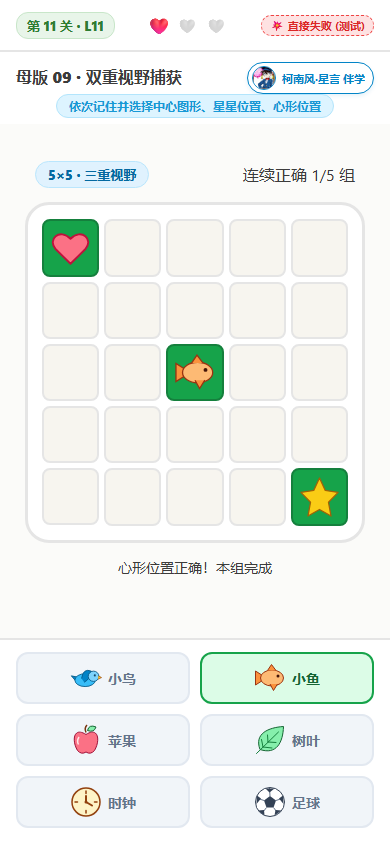
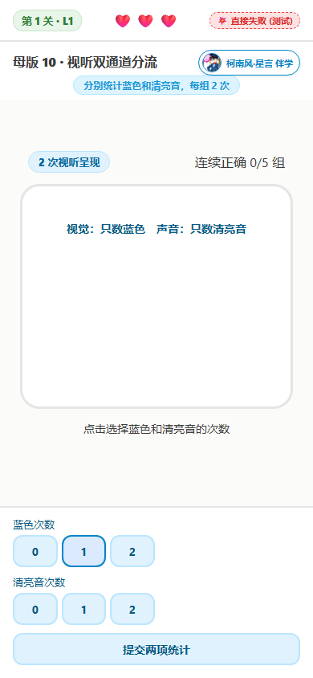

游戏 04～10 玩法报告
母版 04～10 已做成本地试玩初版。以下说明对应实际实现，不涉及在线部署。关卡参数仍可根据体验调整。
- 游戏 09 共 14 关，其他各 10 关；每关都先点击开始，准备期间不消耗时间。
- 游戏 04 将本关所有物体各选一次就升级；游戏 05 连续正确 3 组升级；游戏 06 完成一张数字表就升级；游戏 07 连续正确 3 组升级；游戏 08 在本关限时内达到正确次数要求升级；游戏 09～10 连续正确 5 组升级。
- 前两次失误各扣一颗心，并将本关进度归零；提示停留 2 秒后重新出题，无需确认。游戏 06 点错只提示，只有超时才适用扣心重开规则。
- 第三次失误结束游戏并显示报告；升级恢复三颗心。
- 舒尔特按每关限时；鸟群 L1～L5 每关 20 秒、L6～L10 每关 25 秒；其余没有作答倒计时。
- 切换游戏或结束时清理呈现和声音任务，避免旧流程干扰新游戏。
排他性情景记忆提取
记住“选过哪些物体”，抵抗摆放位置改变带来的干扰。
怎么玩
画面展示一组不同物体。每次选择本关还没选过的物体，选对后潮水涌上棋盘并退去，900ms 动画期间不能点击，450ms 时重新洗牌。把所有物体各选一次就升级，无需完成 5 组。L1～L5 为 4×4，L6～L10 为 5×5；物体由 4 件逐级增加到 13 件。
一个例子
L1 有 4 件物体：先选足球，位置打乱后再选小鸟；足球即使换了位置，也不能再选。将 4 件各选一次就进入 L2，L2 需要选 5 件。重复选择会扣心，并重新随机开始本关。
| 关卡 | 实际参数 |
|---|---|
| L1 | 4 件物体，4×4 摆放区域；各选一次升级 |
| L2 | 5 件物体，4×4 摆放区域；各选一次升级 |
| L3 | 6 件物体，4×4 摆放区域；各选一次升级 |
| L4 | 7 件物体，4×4 摆放区域；各选一次升级 |
| L5 | 8 件物体，4×4 摆放区域；各选一次升级 |
| L6 | 9 件物体，5×5 摆放区域；各选一次升级 |
| L7 | 10 件物体，5×5 摆放区域；各选一次升级 |
| L8 | 11 件物体，5×5 摆放区域；各选一次升级 |
| L9 | 12 件物体，5×5 摆放区域；各选一次升级 |
| L10 | 13 件物体，5×5 摆放区域；各选一次升级 |

听觉语义概念综摄
边听边分类、分别累计各类别的次数，直到整组结束再比较。L1～L3 为 2 类，L4～L6 为 3 类，L7～L10 为 4 类；类别选项附图标，排成一行。
怎么玩
点击开始，依次听完整组词语，再选择出现次数最多的类别。录音播放时显示声波动画，停顿或播放结束时动画停止；不能重播或进入文字练习。播放期间不能答题，不显示词语或类别次数。每组词语不重复，保证只有一个最多的类别；相邻组类别尽量不重叠，类别较多时保证组合不同；连续正确 3 组升级。
一个例子
L1 听到“苹果、小狗、香蕉、小猫、葡萄”：水果出现 3 次、动物出现 2 次，选择“水果”。后续同时统计更多词语和更多类别。
使用项目内置的 140 段晓晓/云扬混合录音，不依赖浏览器中文朗读服务。不提供再听一次或文字练习，播放失败会提示返回训练首页后重新开始。
| 关卡 | 实际参数 |
|---|---|
| L1 | 5 个词，2 类；连续正确 3 组升级 |
| L2 | 7 个词，2 类；连续正确 3 组升级 |
| L3 | 9 个词，2 类；连续正确 3 组升级 |
| L4 | 7 个词，3 类；连续正确 3 组升级 |
| L5 | 9 个词，3 类；连续正确 3 组升级 |
| L6 | 11 个词，3 类；连续正确 3 组升级 |
| L7 | 9 个词，4 类；连续正确 3 组升级 |
| L8 | 11 个词，4 类；连续正确 3 组升级 |
| L9 | 13 个词，4 类；连续正确 3 组升级 |
| L10 | 15 个词，4 类；连续正确 3 组升级 |
舒尔特注意力阶梯
扩大搜索范围，并在逐步缩短的时间里保持顺序。
怎么玩
数字随机摆放，在本关限时内按 1、2、3……顺序点击，直到找齐。正确格子变绿并锁定；每关完成一张数字表就升级。点错只显示错误提示，可以继续寻找正确数字，不扣心、不重置棋盘、进度或倒计时。只按是否在规定时间内完成来判断过关。
一个例子
L1 的 3×3 表含 1～9，须在 15 秒内依次找齐，完成后直接升级。L2 同为 3×3，限时缩短至 10 秒。
L1～L3：3×3、15/10/5 秒；L4～L6：4×4、20/15/10 秒；L7～L9：5×5、30/25/20 秒；L10：6×6、40 秒。只有超时才扣心并重新随机开始本关，第三次超时结束游戏。
| 关卡 | 实际参数 |
|---|---|
| L1 | 3×3，1～9，本组 15 秒 |
| L2 | 3×3，1～9，本组 10 秒 |
| L3 | 3×3，1～9，本组 5 秒 |
| L4 | 4×4，1～16，本组 20 秒 |
| L5 | 4×4，1～16，本组 15 秒 |
| L6 | 4×4，1～16，本组 10 秒 |
| L7 | 5×5，1～25，本组 30 秒 |
| L8 | 5×5，1～25，本组 25 秒 |
| L9 | 5×5，1～25，本组 20 秒 |
| L10 | 6×6，1～36，本组 40 秒 |

图标顺序复原
记住图标和先后关系，抵抗下方打乱排列带来的干扰。
怎么玩
观察和答题都使用固定九宫格，图标从左到右、从上到下依次出现，每次仅显示一个，前一个消失后才显示下一个。最后一个显示结束后播放 900ms 潮水动画，450ms 时将同一批图标随机放在九宫格任意位置，潮水退去后才开放点击；不展示全图，也不等待空白 2 秒；单数关正序点击，双数关倒序点击。每个图标只点一次，选对高亮并锁定，连续正确 3 组升级。
一个例子
先出现“小鸟→足球→苹果”。随后打乱为“苹果、足球、小鸟”，依次点击小鸟、足球、苹果，就完成这一组。
L1/2 为 3 个，每两级增加 1 个，L13/14 为 9 个；同一数量先正序、后倒序。单项显示最低 350ms，项间空白 180ms，最后一项结束播放 900ms 潮水动画后答题，未使用的格子也随机分布。点错扣心并重置本关进度，第三次失误结束，升级补满三颗心。
| 关卡 | 实际参数 |
|---|---|
| L1 | 3 个不同图标；正序点击；每项 800ms |
| L2 | 3 个不同图标；倒序点击；每项 750ms |
| L3 | 4 个不同图标；正序点击；每项 700ms |
| L4 | 4 个不同图标；倒序点击；每项 650ms |
| L5 | 5 个不同图标；正序点击；每项 600ms |
| L6 | 5 个不同图标；倒序点击；每项 550ms |
| L7 | 6 个不同图标；正序点击；每项 500ms |
| L8 | 6 个不同图标；倒序点击；每项 450ms |
| L9 | 7 个不同图标；正序点击；每项 400ms |
| L10 | 7 个不同图标；倒序点击；每项 350ms |
| L11 | 8 个不同图标；正序点击；每项 350ms |
| L12 | 8 个不同图标；倒序点击；每项 350ms |
| L13 | 9 个不同图标；正序点击；每项 350ms |
| L14 | 9 个不同图标；倒序点击；每项 350ms |

迷途鸟群侧抑制
在越来越密集的动物和文具图标中迅速找到下划线目标，抵抗类别和方向干扰。
怎么玩
鸟群中随机混入小鱼、兔子、乌龟、铅笔、钢笔和画笔，目标可以是任一带下划线的图标。动物看头部，文具看尖端，判断其方向；L1～L5 判断左右，L6～L10 判断上下左右。可点击方向按钮，也可用方向键或 WASD、数字小键盘 8/4/2/6。L1～L5 每关 20 秒，L6～L10 每关 25 秒，达到规定正确次数升级；换题时倒计时继续，图标保留到作答。每次换题超过一半的图标改变方向，下划线位置必定变化。W 上、A 左、S 下、D 右，长按不重复计分。
一个例子
划线目标是朝上的铅笔，就选上；目标是朝左的小鱼，就选左，与其他图标的方向无关。L1 为 2×2、4 个图标，需要在 20 秒内答对 8 次；L10 为 6×6、36 个，需要在 25 秒内答对 26 次。
L1～L10 正确次数为 8/10/12/14/16/18/20/22/24/26；网格为 2×2、2×3、3×3、3×4、4×4、4×5、5×5、5×6、6×6、6×6。点错或超时扣心并清零本关次数，2 秒提示后重新开始本关倒计时；第三次失败结束，升级补满三颗心。
| 关卡 | 实际参数 |
|---|---|
| L1 | 2×2，4 个图标，其中 1 个动物/文具；左右；20 秒内答对 8 次 |
| L2 | 2×3，6 个图标，其中 2 个动物/文具；左右；20 秒内答对 10 次 |
| L3 | 3×3，9 个图标，其中 3 个动物/文具；左右；20 秒内答对 12 次 |
| L4 | 3×4，12 个图标，其中 4 个动物/文具；左右；20 秒内答对 14 次 |
| L5 | 4×4，16 个图标，其中 5 个动物/文具；左右；20 秒内答对 16 次 |
| L6 | 4×5，20 个图标，其中 7 个动物/文具；上下左右；25 秒内答对 18 次 |
| L7 | 5×5，25 个图标，其中 8 个动物/文具；上下左右；25 秒内答对 20 次 |
| L8 | 5×6，30 个图标，其中 10 个动物/文具；上下左右；25 秒内答对 22 次 |
| L9 | 6×6，36 个图标，其中 12 个动物/文具；上下左右；25 秒内答对 24 次 |
| L10 | 6×6，36 个图标，其中 12 个动物/文具；上下左右；25 秒内答对 26 次 |

双重视野捕获
同时分配注意给中心与周边，保留目标类别和空间位置。
怎么玩
观察时只展示中心图形和周边目标，不显示下方选项。图形隐藏并保持 200ms 后，先选择中心图形，再点击星星位置。L11～L14 加入心形，最后还须点击心形位置，三项都正确才完成一组。每组更换中心图形，保证与上一组不同。
一个例子
看到中心蝴蝶、右上角黄色五角星：先选蝴蝶，再点击黄色五角星的位置。其他颜色的五角星、黄色三角形和黄色菱形四角形是干扰，不需要回答；只有黄色五角星才是星星目标。
共 14 关。L1 显示 500ms，L2 显示 300ms，L3～L14 均显示 250ms。L1～L5 为 3×3，L6 起为 5×5；星星和心形只出现在最外圈，位置互不重叠。L1～L10 每两级增加一个图形选项，依次为 2/2/3/3/4/4/5/5/6/6，所有图形选项排成一行；L11～L14 保持 6 个选项，曝光保持 250ms。中心图形从 12 种物体中随机选取。连续正确 5 组升级。
| 关卡 | 实际参数 |
|---|---|
| L1 | 3×3；2 个图形选项；双重视野；显示 500ms；0 个颜色/形状干扰 |
| L2 | 3×3；2 个图形选项；双重视野；显示 300ms；0 个颜色/形状干扰 |
| L3 | 3×3；3 个图形选项；双重视野；显示 250ms；0 个颜色/形状干扰 |
| L4 | 3×3；3 个图形选项；双重视野；显示 250ms；1 个颜色/形状干扰 |
| L5 | 3×3；4 个图形选项；双重视野；显示 250ms；1 个颜色/形状干扰 |
| L6 | 5×5；4 个图形选项；双重视野；显示 250ms；1 个颜色/形状干扰 |
| L7 | 5×5；5 个图形选项；双重视野；显示 250ms；2 个颜色/形状干扰 |
| L8 | 5×5；5 个图形选项；双重视野；显示 250ms；2 个颜色/形状干扰 |
| L9 | 5×5；6 个图形选项；双重视野；显示 250ms；2 个颜色/形状干扰 |
| L10 | 5×5；6 个图形选项；双重视野；显示 250ms；3 个颜色/形状干扰 |
| L11 | 5×5；6 个图形选项；三重视野；显示 250ms；3 个颜色/形状干扰 |
| L12 | 5×5；6 个图形选项；三重视野；显示 250ms；3 个颜色/形状干扰 |
| L13 | 5×5；6 个图形选项；三重视野；显示 250ms；3 个颜色/形状干扰 |
| L14 | 5×5；6 个图形选项；三重视野；显示 250ms；3 个颜色/形状干扰 |

视听双通道分流
同时保持两条独立的计数，避免混淆视觉与听觉目标。
怎么玩
每组播放前先显示 3、2、1，各停留 1 秒，倒计时结束后才开始图形和声音；下一组与失误重开也会倒计时。每次同时出现一个彩色圆点和一个声音。只统计本关指定颜色与目标音色的次数，忽略其他颜色和声音；每级更换目标颜色与音色。L1 每组 2 次，每级增加 1 次，L10 为 11 次。每次显示 750ms，项间 180ms，播放速度固定。整组结束后点击两个次数按钮，再提交。
一个例子
L1 的目标为蓝色与清亮音。两次呈现中，蓝色出现 1 次、清亮音出现 2 次，分别点击 1 和 2，再提交。图形与声音独立随机，不能只看图猜声音。
颜色池移除黄色，保留蓝、橙、绿、紫、粉、红。L1～L5 使用目标色与 1 种干扰色，L6～L10 使用目标色与 2 种干扰色；本关配色固定，下一关更换。清亮音为 880Hz 正弦波，柔和音为 220Hz 三角波，目标交替。每关开始前只展示本关会出现的 2/3 种颜色圆点，并标注本关只统计的目标颜色；保留两个声音的试听按钮及目标音色标记。次数可为 0，按钮范围为 0～本组次数；连续正确 5 组升级。真实音色和音量需本机试听确认。
| 关卡 | 实际参数 |
|---|---|
| L1 | 2 次视听呈现；2 种颜色；目标 蓝色 / 清亮音；每次 750ms |
| L2 | 3 次视听呈现；2 种颜色；目标 橙色 / 柔和音；每次 750ms |
| L3 | 4 次视听呈现；2 种颜色；目标 蓝色 / 清亮音；每次 750ms |
| L4 | 5 次视听呈现；2 种颜色；目标 橙色 / 柔和音；每次 750ms |
| L5 | 6 次视听呈现；2 种颜色；目标 蓝色 / 清亮音；每次 750ms |
| L6 | 7 次视听呈现；3 种颜色；目标 绿色 / 柔和音；每次 750ms |
| L7 | 8 次视听呈现；3 种颜色；目标 蓝色 / 清亮音；每次 750ms |
| L8 | 9 次视听呈现；3 种颜色；目标 橙色 / 柔和音；每次 750ms |
| L9 | 10 次视听呈现；3 种颜色；目标 绿色 / 清亮音；每次 750ms |
| L10 | 11 次视听呈现；3 种颜色；目标 蓝色 / 柔和音；每次 750ms |
